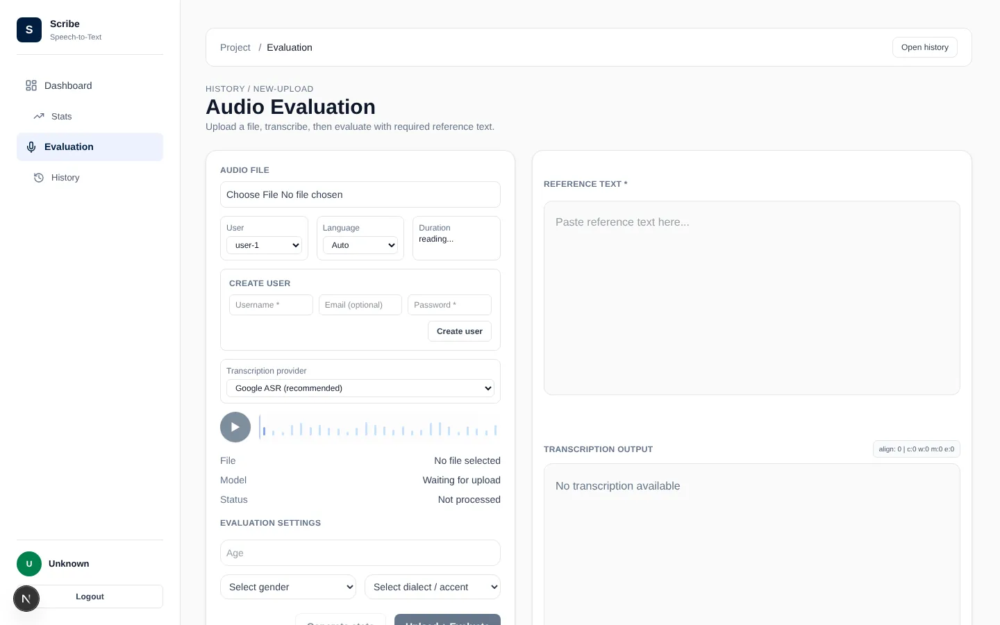

01
Scribe
Speech-to-text evaluation platform · Bachelor's thesis
Upload an audio recording, transcribe it with Google Cloud Speech-to-Text or OpenAI Whisper, and measure how accurate the result is with standard metrics (WER, CER, MER, WIL). It works with Albanian, English, German and Turkish, and the dashboard compares accuracy across languages, dialects, age and gender.
Next.js · TypeScript · Django REST · PostgreSQL · Whisper · Docker
Source on GitHub
